As the global population is increasing and agricultural resources are diminishing, effective management of plant diseases becomes critical. CNN-based models have been widely adopted in Agriculture Cyber-Physical Systems (A-CPS) due to their high accuracy. However, these models require large, labeled datasets for training, limiting their practicality in plant disease detection where data is heterogeneous, scarce, and subjected to continual evolution.
To address these challenges, we propose Semantic-Search, a knowledge-driven system that interprets plant diseases based on high-level semantic features like visual patterns, colors, and crop type, rather than relying solely on low-level image features. The system classifies diseases by querying a structured knowledge base using these semantics — enabling greater adaptability, interpretability, and robustness to intra-class variability.
The system can incorporate new disease classes through simple knowledge base updates, eliminating the need for retraining. We validated our approach on a dataset of 11,000 images encompassing 21 diseases across 11 plant species, achieving an accuracy of 90%, demonstrating its effectiveness and scalability.
90%
Overall Accuracy
11,000
Images Tested
21
Disease Classes
11
Plant Species
98%
NER F1 Score
0
Retraining Needed
Motivation & Problem
All CNN-based classification models consist of two primary components: a feature extractor and a classifier. These models are data-driven — trained using large labeled datasets to learn the most effective features and classification rules. This has a critical limitation:
Adding a new disease class requires a large number of labeled images and full retraining.
In agriculture, data is heterogeneous, scarce, and continually evolving.
Models are not interpretable — they are black boxes with no semantic reasoning.
Semantic-Search overcomes this by mimicking how humans learn: through descriptive text and semantic knowledge — not by processing thousands of images.
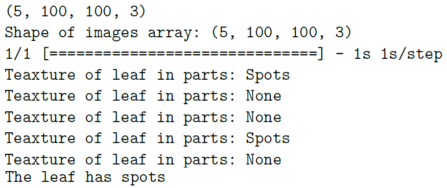
Fig. 1: Semantic features (shape, color, texture) identified by the system on a diseased leaf.
Proposed Approach
Semantic-Search is a knowledge-driven classification system that integrates three components working in sequence:
🖼️Leaf Image
→
🧠CNN (Object Detection)
→
💬NLP (Semantic Understanding)
→
🗃️Knowledge Base (Database Query)
→
🏷️Disease Label
Two Pathways
Learning: To add a new disease class, a user simply provides a text description (e.g., "Apple crops affected by cedar rust disease have spots with brown, yellow colors"). The NLP/NER model extracts the plant name, disease name, semantics, and colors, then inserts them into the database — no image labeling or model retraining needed.
Inference: Given a diseased leaf image, the CNN classification model identifies semantic features (spots, stripes, patches). If localization is needed, a segmentation model isolates the diseased region. HSV color filters then extract the dominant colors. The extracted semantics and colors are used to query the knowledge base using Weighted Jaccard similarity to retrieve the best-matching disease.
Knowledge Representation
Each plant disease is represented as a combination of a semantic feature (shape/texture) and a set of colors. 120 plant diseases were analyzed to define these semantics:
Semantics
Instances
Shape
Spot, Lesions, Patches, Flecks, Curls, Stripes
Color
Yellow, Black, Brown, White, Red, Gray, Pink
Texture
Powdery, Mosaic, Velvety
Apple
Cedar Rust
PatchesBrownRedYellowOrange
Apple
Powdery Mildew
VelvetyWhite
Corn
Rust
FlecksBrown
Grape
Rot
LesionsBrownBlack
Tomato
Black Mold
LesionsBlackBrown
Novel Contributions
1
Semantic Understanding: Identifies patterns and objects within the diseased area along with their semantic description, rather than rigidly coupling the model to specific low-level pixel features of individual diseases.
2
Knowledge-Driven Approach: Classification leverages a knowledge-based system, allowing the addition or removal of disease classes through simple text inputs and database updates — eliminating the need for retraining.
3
Interpretability & Explainability: Provides users with a description of the identified semantics, offering a transparent explanation for the classification decision, unlike black-box CNN methods.
4
Scalability: The knowledge update mechanism is simple and efficient — adding a new disease class requires only a text input and a database update, making it easy to scale to a larger number of diseases without extensive computational resources.
System UI
The Semantic-Search system is deployed as a web application with three core pages:
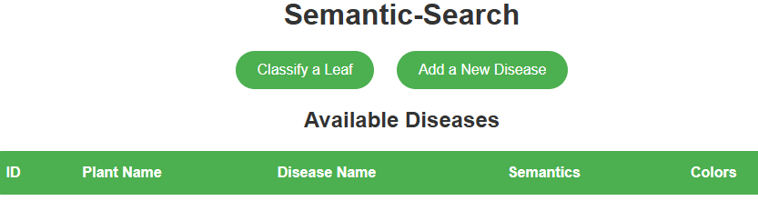
Fig. 2: Home page — lists all known diseases and provides access to classification and disease-addition workflows.
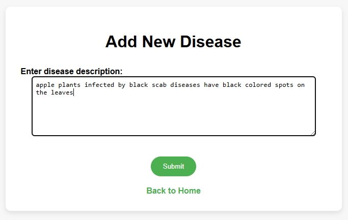
Fig. 3: Add Disease page — user provides a natural language description; the system extracts entities via NER.
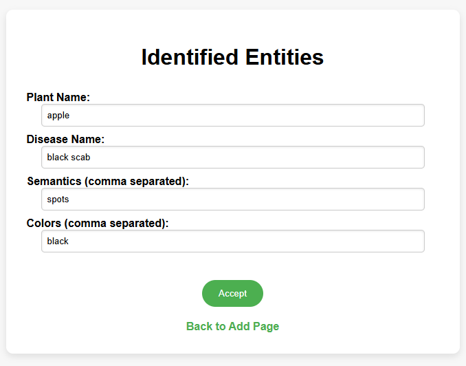
Fig. 4: Confirm page — extracted entities (plant, disease, semantics, colors) are presented for user review before saving.
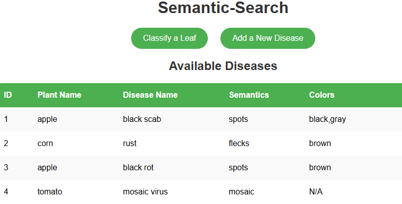
Fig. 5: Home screen showing the list of diseases added to the knowledge base.
Classify a Leaf
Users select a crop type, upload an image of a diseased leaf, and the system returns the predicted disease along with the identified semantics and colors.
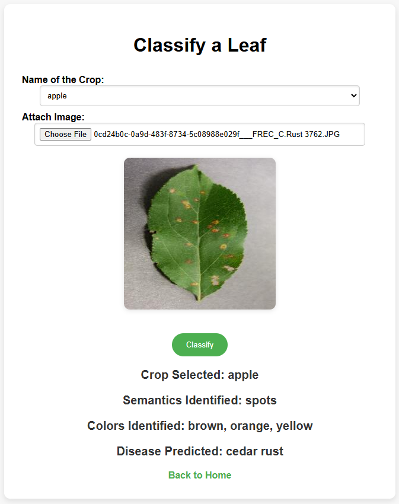
Classification result — Example 1
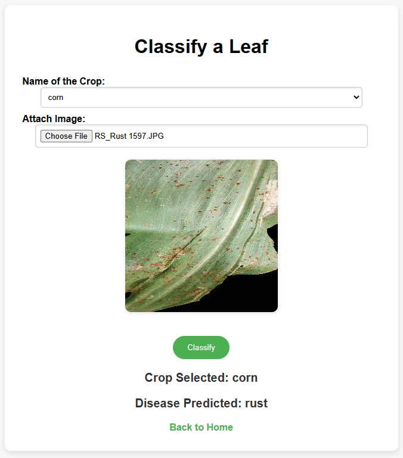
Classification result — Example 2
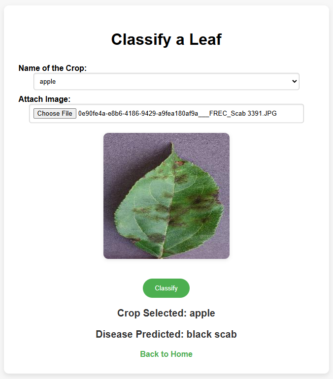
Classification result — Example 3
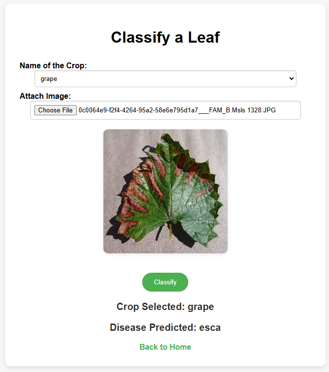
Classification result — Example 4
Experimental Results
The system was validated on 11,000 images covering 21 diseases across 11 plant species from the PlantVillage and PlantDoc datasets.
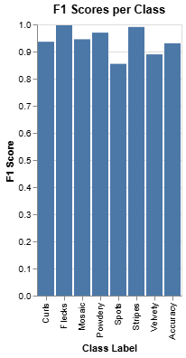
Fig. 6: Per-class F1 score, accuracy, precision, and recall for the CNN semantic classification model.
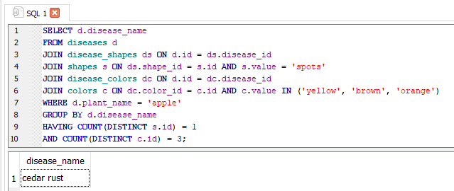
Fig. 7: Confusion matrix of the developed Semantic-Search system across all 21 disease classes.
Per-Class Metrics (Selected)
Disease
Accuracy
F1 Score
Precision
Recall
Apple Black Rot
81.62
85.96
90.80
81.62
Apple Cedar Rust
81.04
72.31
65.27
81.04
Cherry Mildew
91.67
95.65
100
91.67
Corn Blight
99.40
86.43
76.46
99.40
Corn Rust
100
99.67
99.34
100
Grape Blight
85.40
74.52
72.52
85.40
Orange Citrus Bacterial Spot
100
100
100
100
Potato Blight
99.60
99.79
100
99.60
Tomato Blight
91.93
78.65
68.73
91.93
Tomato Mosaic Virus
100
99.01
98.04
100
Average
90
91
93
90
Comparison with Existing Methods
Approach
Semantic Understanding
Retraining Needed
Scalability
Accuracy
CNN-based models
Limited (pixel-level)
Yes
Low
97%
Histogram-based (SVM)
No
Yes
Low
80%
Bag of Visual Words
No
Yes
Low
82%
Knowledge Graph methods
Yes
No (complex graph)
Moderate
83%
Semantic-Search (Ours)
Yes (Object + Color + NLP)
No (DB update only)
High
90%
Semantic-Search achieves 90% accuracy with no retraining required for new classes, and with classification times as low as 132 ms on an NVIDIA L4 GPU.
Code & Notebooks
The repository contains Jupyter notebooks implementing the three main components of the Semantic-Search pipeline:
Semantic_Classification.ipynb
CNN-based semantic classification model (87,207 parameters). Trained on 7,000 images to identify shape/texture semantics (spots, stripes, patches, etc.).
Semantic_Segmentation.ipynb
Fully convolutional segmentation model (1.45M parameters). Localizes diseased regions for precise color extraction using HSV filters.
Spacy.ipynb
spaCy NER model training using tok2Vec. Identifies PLANT, DISEASE, COLOR, and SEMANTIC entities from free-text disease descriptions. Achieves 98% F1.
TAFER1.ipynb
End-to-end inference pipeline integrating the classification, segmentation, NLP, and database query components.
Citation
If you find this work useful, please cite:
@article{kethineni2025semanticsearch,
title = {Semantic-Search: A Knowledge-Driven Classification Method
for Accurate Identification of Plant Diseases},
author = {Kethineni, Kiran K. and Mohanty, Saraju P. and Kougianos, Elias},
journal = {IEEE Transactions on AgriFood Electronics},
year = {2025},
note = {TAFE-02-0037-2025}
}
Acknowledgment
This journal paper is based on a preliminary conference presentation:
K. K. Kethineni, S. P. Mohanty, and E. Kougianos, "Semantic-search: A knowledge-driven classification method for plant diseases," in Proc. IEEE 2nd Conference on AgriFood Electronics (CAFE), 2024, pp. 95–99.
Research conducted at the Smart Electronics Systems Laboratory, University of North Texas, Denton, TX, USA.